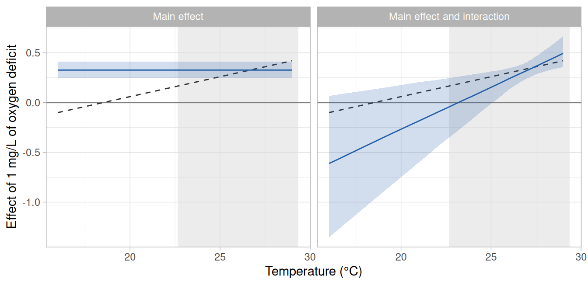
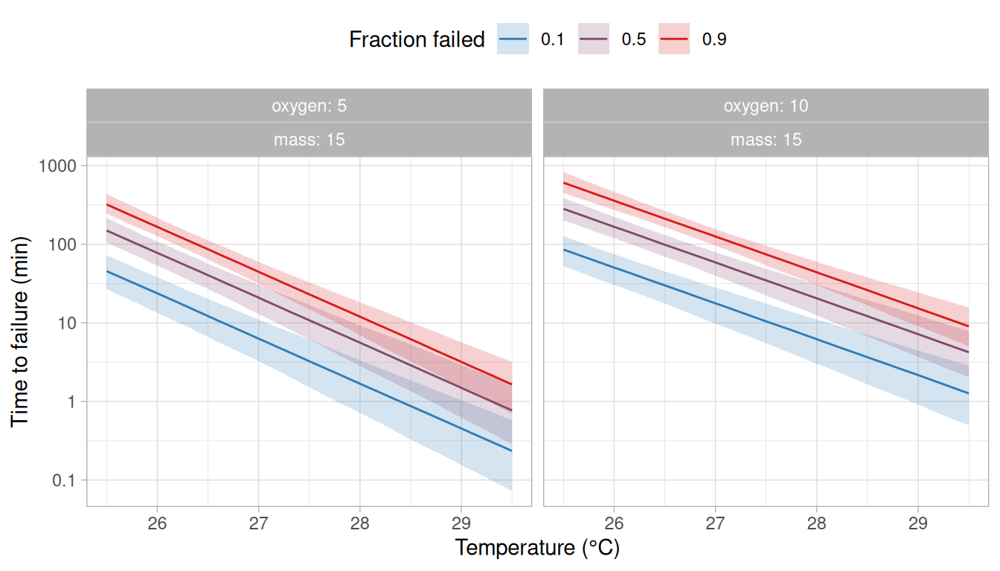
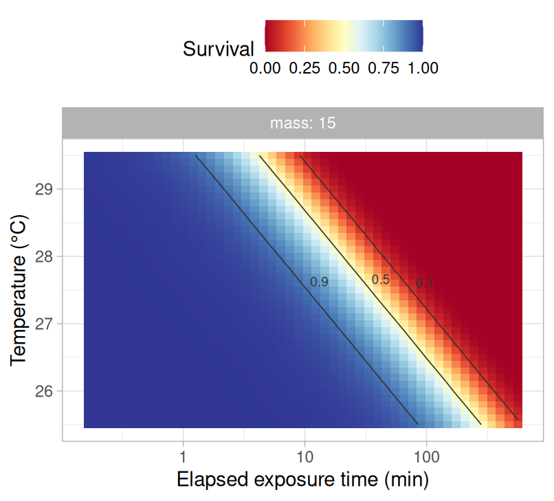
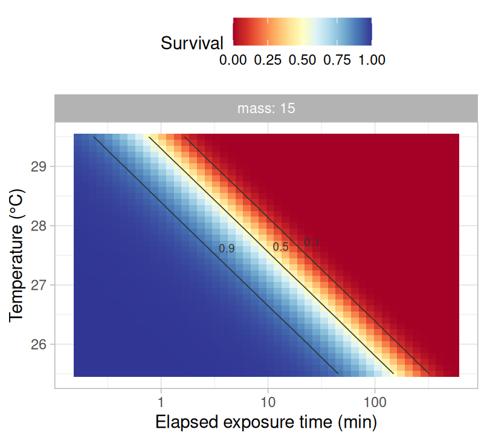
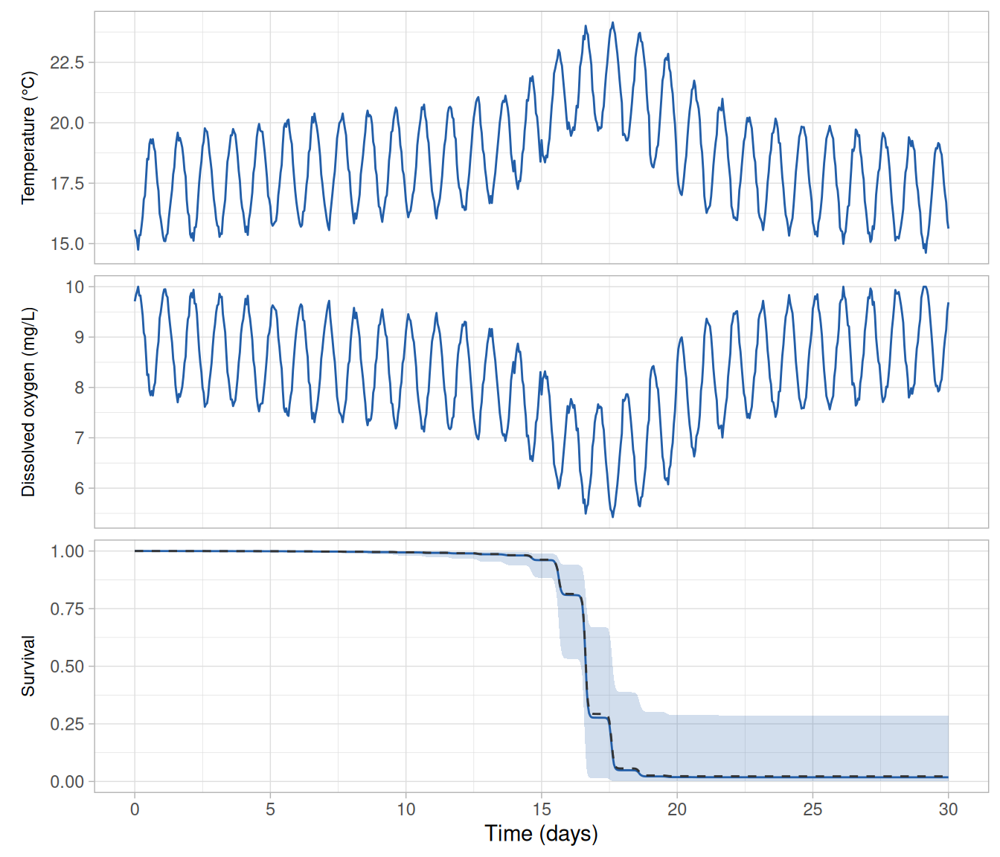

Temperature not always acts alone. For example, fish exposed to high temperatures may simultaneously encounter low dissolved oxygen, and their tolerance to one may depend on the level of the other (Ern et al. 2016). In rTFT, a second environmental variable of this kind is declared as a co-stressor, and the failure rate then depends on both temperature and the co-stressor.
In this vignette, we fit two models to a ramping assay that was run at two levels of dissolved oxygen: one in which oxygen changes the failure rate by the same proportion at every temperature, and one in which its effect also changes with temperature (i.e., an interaction). We then: (i) derive the critical thermal maxima, the thermal death time curves and the thermal tolerance landscape at chosen levels of oxygen, and (ii) predict survival along a record of stream temperature and dissolved oxygen. We also show what an interaction between temperature and a co-stressor implies when a model is used to predict at temperatures below those of the assay. The steps shared with the previous vignettes are described in Getting started with rTFT and Ramping assays.
The assay
We use the 240 fish of ramp_assay that were warmed at 0.025, 0.1 or 0.3°C per min, which are the rates with the wider span in the vignette Ramping assays. Each rate was run in four trials of ten fish in normoxia (10 mg/L of dissolved oxygen) and four in hypoxia (5 mg/L), so the rates and the levels of oxygen are fully crossed. The oxygen of each trial is in the column do.
rates <- c(0.025, 0.1, 0.3)
ramp <- subset(ramp_assay, rate %in% rates)
ramp$ctmax <- 14 + ramp$rate * ramp$t_event
observed <- ramp |>
dplyr::summarise(
n_fish = dplyr::n(),
n_failed = sum(event),
median_ctmax = median(ctmax),
.by = c(rate, do)
) |>
dplyr::arrange(rate, dplyr::desc(do))
observed
#> # A tibble: 6 × 5
#> rate do n_fish n_failed median_ctmax
#> <dbl> <dbl> <int> <int> <dbl>
#> 1 0.025 10 40 40 26.6
#> 2 0.025 5 40 40 25.7
#> 3 0.1 10 40 40 27.6
#> 4 0.1 5 40 40 27.1
#> 5 0.3 10 40 35 28.7
#> 6 0.3 5 40 40 28.0At each of the three rates, the median CTmax was lower in hypoxia than in normoxia, by 0.5–0.9°C.
Note
The data were simulated (see
?ramp_assay). In the model used to simulate them, low oxygen raises the failure rate, and the more so the warmer the water: each mg/L of oxygen below 10 mg/L adds 0.30 to the logarithm of the failure rate at 26°C, and this effect changes by 0.04 for each degree (i.e., it is 0.22 at 24°C and 0.38 at 28°C). The effect of oxygen is therefore a straight line in temperature, which is the form of the interaction fitted in this vignette, and it reaches zero at 18.5°C.
Dissolved oxygen as a co-stressor
A co-stressor is declared with the function costressor(), which requires three choices that have no safe default: the reference level at which the co-stressor is known or expected to add no stress (ref), the unit in which its effect is expressed (scale) and whether more or less of it is more stressful (direction). For dissolved oxygen we take normoxia as the reference (10 mg/L), express the effect per 1 mg/L, and set the direction to −1 because less oxygen is more stressful.
DO <- costressor("DO", column = "do", ref = 10, scale = 1, direction = -1)With these choices the model uses the oxygen deficit, (i.e., 0 in normoxia and 5 at 5 mg/L), and the failure rate becomes
At the reference () the model is the one of the previous vignettes, so and keep their meaning and describe a fish in normoxia. The main effect (the parameter cDO) is the change in the logarithm of the failure rate for each mg/L of oxygen deficit, so each mg/L of deficit multiplies the failure rate by , at every temperature.
A co-stressor may also interact with temperature, which is asked for with interaction = TRUE.
DO_interaction <- costressor("DO", column = "do", ref = 10, scale = 1, direction = -1,
interaction = TRUE)The failure rate then has a further term,
in which the interaction (the parameter dTDO) is the change in the effect of oxygen for each degree above the reference temperature . With the effect of low oxygen is stronger at higher temperatures, and is its effect at the reference temperature.
The table of intervals at risk
The co-stressor is given to build_hazard_data(), which adds the column z_DO with the oxygen deficit of each row. Here oxygen was constant within a trial, so it is read from the column do of the fish. A co-stressor that changes during a trial is given as a table of its values through time, as temperature is (see the argument trajectory in ?costressor).
path <- ramp_path(c("r0.025", "r0.1", "r0.3"), T_start = 14, rate = rates,
t_max = 15.5 / rates)
long <- build_hazard_data(ramp, path, observation = "continuous",
covariates = c("mass", "trial"), costressors = list(DO))
unique(long[c("path_id", "z_DO")])
#> # A tibble: 6 × 2
#> path_id z_DO
#> <chr> <dbl>
#> 1 r0.1 0
#> 2 r0.1 5
#> 3 r0.3 0
#> 4 r0.3 5
#> 5 r0.025 0
#> 6 r0.025 5Fitting
The same list of co-stressors is given to fit_hazard(). We fit the model of the previous vignettes (an exponential failure rate with a Weibull baseline, with depending on body mass and varying among trials) with oxygen entering in each of the two ways. The table of intervals at risk is the same for both, because it holds the oxygen deficit whichever way oxygen enters the model.
formulas <- list(loga = ~ 1 + I(mass - 15) + (1 | trial))
fit_main <- fit_hazard(
long,
m_form = "exp",
baseline = "weibull",
dpar_formulas = formulas,
costressors = list(DO),
chains = 4, iter = 2000, warmup = 1000, cores = 4, seed = 20261006,
control = list(adapt_delta = 0.95)
)
fit_interaction <- fit_hazard(
long,
m_form = "exp",
baseline = "weibull",
dpar_formulas = formulas,
costressors = list(DO_interaction),
chains = 4, iter = 2000, warmup = 1000, cores = 4, seed = 20261006,
control = list(adapt_delta = 0.95)
)The default priors of the parameters of the co-stressor are shown by build_hazard_prior() when it is given the same list (see ?build_hazard_prior). Fitting the two models takes about 40 min, so the code of this vignette that uses the fitted models was run once and its results were saved with the package (see the note at the end of this vignette).
| Model | Largest R-hat | Smallest bulk ESS | Smallest tail ESS | Divergent transitions | Times outside the band | P (residuals) |
|---|---|---|---|---|---|---|
| Main effect | 1.002 | 987 | 1448 | 0 | 16 of 916 | 0.60 |
| Main effect and interaction | 1.005 | 894 | 1134 | 0 | 10 of 916 | 0.54 |
Both models converged, with no divergent transitions (Table 1). The two checks of fit were made as in the vignette Getting started with rTFT, with the proportion of fish surviving compared for each ramp at each level of oxygen (check_survival(fit, by = "z_DO")). The model with the interaction described the data better: the proportion observed was outside the simulated band at 10 of the 916 observation times, against 16 under the model with the main effect alone.
The effect of oxygen
The parameters are obtained with derive_tdt_ttl(), which for a model with a co-stressor requires the level of the co-stressor at which the derived quantities are reported (levels), on its measurement scale.
tol <- derive_tdt_ttl(fit_interaction, newdata = data.frame(mass = 15), t_ref = 60,
levels = c(DO = 10), Ta = seq(25.5, 29.5, by = 0.1))
tol$params| Parameter | Simulated | Main effect | Main effect and interaction |
|---|---|---|---|
| a | 2.79 | 3.13 (2.17–4.34) | 3.26 (2.28–4.61) |
| b (per °C) | 1.70 | 1.81 (1.62–2.00) | 1.65 (1.43–1.87) |
| k | 1.50 | 1.52 (1.30–1.79) | 1.57 (1.33–1.85) |
| Main effect of oxygen | 0.35 | 0.33 (0.25–0.41) | 0.34 (0.26–0.42) |
| Interaction with temperature | 0.04 | 0.08 (0.02–0.15) |
In the model with the main effect alone, the effect of oxygen was 0.33 per mg/L (95% credible interval: 0.25–0.41), which is on the scale of the logarithm of the failure rate. Its exponential is the factor by which each mg/L of oxygen deficit multiplied the failure rate: = 1.4 (1.3–1.5), at every temperature (Table 2). A deficit of several mg/L multiplies the failure rate by that factor once for each mg/L (e.g., by = 5.1 for the 5 mg/L of deficit of the trials in hypoxia).
In the model with the interaction, the effect was 0.34 per mg/L (0.26–0.42) at the reference temperature (27.1°C) and increased by 0.08 (0.02–0.15) for each degree, with a posterior probability of 1.00 that the interaction is positive. Low oxygen was therefore more harmful at higher temperatures, as it is in the model used to simulate the data. The estimate of the interaction was about twice the simulated value (0.04), which is within its credible interval.
What each model implies for temperatures other than those of the assay is seen by computing the effect of oxygen on the failure rate across temperatures. The function M_draws() returns the posterior draws of the failure rate at given temperatures and levels of the co-stressor (the rate itself, and not its logarithm). The effect of 1 mg/L of oxygen deficit at a temperature is the difference between the logarithm of the failure rate at 9 mg/L and that at 10 mg/L (i.e., ), which we compute for each posterior draw and summarise by its median and 95% credible interval.
# The effect of 1 mg/L of oxygen deficit on the logarithm of the failure rate, at
# each temperature, from a fitted model.
oxygen_effect <- function(fit) {
temperatures <- seq(16, 29, by = 0.5)
fish <- data.frame(mass = 15)
normoxia <- M_draws(fit, Ta = temperatures, newdata = fish, levels = c(DO = 10),
n_draws = 1000)
deficit <- M_draws(fit, Ta = temperatures, newdata = fish, levels = c(DO = 9),
n_draws = 1000)
normoxia$effect <- log(deficit$M / normoxia$M)
normoxia |>
dplyr::summarise(
median = median(effect),
lower = quantile(effect, 0.025),
upper = quantile(effect, 0.975),
.by = Ta
)
}
effect <- rbind(
data.frame(model = "Main effect", oxygen_effect(fit_main)),
data.frame(model = "Main effect and interaction", oxygen_effect(fit_interaction))
)
effect$model <- factor(effect$model, levels = unique(effect$model))
# the temperatures at which fish failed in the assay
failed_at <- range(ramp$ctmax[ramp$event == 1])
# the effect in the model used to simulate the data
simulated_effect <- data.frame(Ta = seq(16, 29, by = 0.5))
simulated_effect$effect <- truth$b_do + truth$d_do * (simulated_effect$Ta - truth$T_ref)
ggplot(effect, aes(x = Ta)) +
annotate("rect", xmin = failed_at[1], xmax = failed_at[2], ymin = -Inf, ymax = Inf,
fill = "grey85", alpha = 0.5) +
geom_hline(yintercept = 0, colour = "grey50") +
geom_line(data = simulated_effect, aes(y = effect), linetype = "dashed", colour = "grey20") +
geom_ribbon(aes(ymin = lower, ymax = upper), fill = "#225EA8", alpha = 0.2) +
geom_line(aes(y = median), colour = "#225EA8") +
facet_wrap(vars(model)) +
labs(x = "Temperature (°C)", y = "Effect of 1 mg/L of oxygen deficit") +
theme_light()
In Figure 1, the horizontal axis is temperature and the vertical axis is what 1 mg/L of oxygen deficit adds to the logarithm of the failure rate at that temperature. A value above zero means that low oxygen raises the failure rate (e.g., a value of 0.4 multiplies it by = 1.5), a value of zero that it has no effect, and a value below zero that it lowers the failure rate. Under the model with the main effect alone the effect is the same at every temperature, so its line is horizontal by construction. Under the model with the interaction it is a straight line whose slope is the interaction .
Within the temperatures at which most fish failed, the model with the interaction recovered the effect used to simulate the data: at 28°C it was 0.41 (0.31–0.53), against a simulated 0.38 (Figure 1). Below those temperatures, the credible band widens with the distance from them, because the interaction makes the effect of oxygen a straight line in temperature that is estimated where the fish failed and extended from there. In this assay the interaction was estimated to be steeper than the simulated one, so the fitted line crosses zero between 23.0 and 23.5°C, whereas the simulated line does so at 18.5°C. At 20°C the model gave an effect of −0.27 (95% credible interval: −0.75 to 0.18), against a simulated 0.06. The interval includes the simulated value, and it also includes no effect of oxygen and effects of the opposite sign, with a posterior probability of 0.88 that low oxygen lowers the failure rate at that temperature. These estimates come from a single simulated assay. Among many assays simulated from the same model, the estimates of the interaction are expected to be distributed around the simulated value, and the estimate from any one of them departs from it by chance, by an amount that its credible interval describes.
The model with the main effect alone applies one value to every temperature. Its effect of 0.33 is close to the simulated effect at the reference temperature (0.35 at 27.1°C), around which most fish failed, and is larger than the simulated effect at the temperatures of a stream (e.g., 0.06 at 20°C). Its credible band has the same width at every temperature, including those at which no fish failed.
Thermal tolerance at chosen levels of oxygen
The derived quantities are obtained at any level of the co-stressor by giving it in levels. derive_dctmax() takes the same argument.
fish <- data.frame(mass = 15)
tol_10 <- derive_tdt_ttl(fit_interaction, newdata = fish, t_ref = 60, levels = c(DO = 10),
Ta = seq(25.5, 29.5, by = 0.1))
tol_5 <- derive_tdt_ttl(fit_interaction, newdata = fish, t_ref = 60, levels = c(DO = 5),
Ta = seq(25.5, 29.5, by = 0.1))
dct_5 <- derive_dctmax(fit_interaction, rate = c(0.1, 0.3), T_start = 14, newdata = fish,
levels = c(DO = 5))| Model | Oxygen (mg/L) | sCTmax, 60 min | dCTmax, 0.1°C per min | dCTmax, 0.3°C per min |
|---|---|---|---|---|
| Main effect | 10 | 27.0 (26.7–27.3) | 27.8 (27.7–28.0) | 28.8 (28.6–28.9) |
| Main effect | 5 | 26.1 (25.8–26.4) | 27.0 (26.8–27.1) | 27.9 (27.7–28.1) |
| Main effect and interaction | 10 | 27.0 (26.6–27.3) | 27.8 (27.6–28.0) | 28.8 (28.6–29.1) |
| Main effect and interaction | 5 | 26.2 (25.9–26.5) | 27.0 (26.9–27.1) | 27.8 (27.6–28.0) |
Under the model with the interaction, the sCTmax for 60 min was 27.0°C in normoxia and 26.2°C at 5 mg/L (Table 3). The two models differed by at most 0.1°C in the sCTmax and by less in the dCTmax, because these quantities refer to the temperatures at which the fish failed in the assay.
The thermal death time curves at the two levels of oxygen are drawn together by joining the tables of the two results, with a column for the level of oxygen, which plot_tdt() then treats as it treats a covariate (Figure 2).
both <- list(tdt_curves = rbind(
data.frame(oxygen = 10, tol_10$tdt_curves),
data.frame(oxygen = 5, tol_5$tdt_curves)
))
plot_tdt(both, time_unit = "min")
The thermal tolerance landscape at each level of oxygen is drawn from the corresponding result (Figure 3). At a given temperature, each contour of the probability of survival is reached after a shorter exposure in hypoxia than in normoxia.


Any level of oxygen may be given, including levels that were not in the assay (e.g., levels = c(DO = 7.5)). The assay had two levels, so what the model gives between them or beyond them rests on the assumption that the effect of oxygen on the logarithm of the failure rate is proportional to the deficit, which two levels cannot test.
Survival along a record of temperature and oxygen
For a prediction along a record, the co-stressor is given in one of two ways. When the record has a column with the name the co-stressor was declared with (here do), predict_survival() follows it through time as it follows temperature. Otherwise the co-stressor is held at the level given in levels.
The dataset stream_record holds temperature only, so we add to it a series of dissolved oxygen that falls as the stream warms: 10 mg/L at 15°C or below, and 0.5 mg/L less for each degree above 15°C.
# oxygen following the record
pred_following <- predict_survival(fit_interaction, record, newdata = fish)
# oxygen held at 10 mg/L
pred_normoxia <- predict_survival(fit_interaction, stream_record, newdata = fish,
levels = c(DO = 10))The record and the survival along it are shown in Figure 4. The survival predicted by a model is drawn with plot_survival(), as in the previous vignettes (e.g., plot_survival(pred_following, temperature = TRUE)).

As in the previous vignettes, we also predict the mortality over the five days of the heat wave and over its warmest day, with the exposure counted from the start of each period.
| Oxygen | Model | 30 days | Heat wave, 5 days | Warmest day, 24 h |
|---|---|---|---|---|
| 10 mg/L | Main effect | 76 (45–98) [75] | 40 (23–65) [41] | 10 (5–17) [10] |
| 10 mg/L | Main effect and interaction | 97 (67–100) [93] | 68 (36–97) [67] | 19 (8–38) [20] |
| 10 mg/L | Model used to simulate the data | 81 | 45 | 12 |
| Falling as the stream warms | Main effect | 100 (88–100) [99] | 87 (66–98) [86] | 35 (23–49) [35] |
| Falling as the stream warms | Main effect and interaction | 98 (71–100) [95] | 73 (40–94) [71] | 23 (11–39) [23] |
| Falling as the stream warms | Model used to simulate the data | 98 | 75 | 26 |
Under the model used to simulate the data, the mortality over the heat wave is 45% with oxygen at 10 mg/L and 75% with oxygen falling as the stream warms (Table 4). The model with the main effect alone predicted 40% (95% credible interval: 23–65) and 87% (66–98), and the model with the interaction 68% (36–97) and 73% (40–94). The credible intervals of both models include the simulated values, but the two models differ in how much of the mortality they attribute to oxygen: under the first, falling oxygen more than doubles the mortality over the heat wave, and under the second it changes the mortality little.
The difference follows from the effect of oxygen that each model gives at the temperatures of the stream, which never exceeded 24.1°C (Figure 1). The model with the main effect alone applies there the effect that it estimated at the temperatures at which the fish failed, which is larger than the simulated effect at the temperatures of the stream. The model with the interaction gives there an effect near zero or negative, with a wide credible band. The model with the interaction also predicted a higher mortality with oxygen at 10 mg/L, because its thermal sensitivity was lower (1.65 against 1.81 per °C; Table 2) and a lower gives a higher failure rate at temperatures below the reference temperature.
Both predictions extend the effect of oxygen to temperatures below those at which fish failed in hypoxia in the assay (24.3°C or above), where the assay does not show how the effect of oxygen changes with temperature.
Under the model with the interaction and with oxygen falling, the 95% credible interval of the mortality was narrower over the 30 days (71–100%) than over the heat wave (40–94%). The mortality over the 30 days is therefore the more certain of the two predictions, and the reason is the level of the hazard, not the precision with which it was estimated. Mortality is obtained from the cumulative hazard as and cannot exceed 100%. Over the 30 days, the 95% credible interval of was 1.3–13.5. Its upper limit was 11 times the lower one, but most fish fail at any value within it, so the interval of the mortality spanned 29 percentage points. Over the heat wave, the interval of was 0.5–2.9. Its upper limit was only 6 times the lower one, but mortality changes the most with at such intermediate values, and the interval of the mortality spanned 55 percentage points.
These predictions are extrapolations in the two ways described in the previous vignettes: the stream is cooler than the temperatures at which most fish failed in the assay, and the record is much longer than the trials. They also assume that there is no recovery during the cooler hours of each night (Ørsted et al. 2022). The model used to simulate the data has the form of the fitted models at every temperature and exposure time and makes the same assumption, so the agreement of a prediction with the simulated value says nothing about whether the extrapolations or the assumption hold for real fish (see the vignettes Ramping assays and Comparing and averaging models).
Design of an assay with a co-stressor
The effect of a co-stressor, and how it changes with temperature, are informed only by the temperatures at which individuals fail, and in a ramping assay those cover a few degrees. Within them the two models of this vignette gave similar answers, and outside them they are two different extrapolations: a constant effect, and a straight line that sooner or later changes sign. We therefore recommend: (i) fitting the model with the main effect alone as well as the model with the interaction, and comparing what the two imply at the temperatures for which predictions are needed (Figure 1), in addition to comparing them by cross-validation (see the vignette Comparing and averaging models); (ii) where the two disagree at those temperatures, reporting the predictions of both and treating the effect of the co-stressor below the temperatures at which individuals failed as an extrapolation; (iii) where predictions at lower temperatures are the aim, including in the assay trials in which individuals fail at such temperatures at each level of the co-stressor (e.g., static trials, or ramps slow enough for failures to occur at lower temperatures); (iv) running three or more levels of the co-stressor where its effect at intermediate levels matters, because with two levels the main effect is the difference between two treatments and its proportionality to the level cannot be assessed; and (v) running several trials of each combination of ramp rate and level of the co-stressor, because the co-stressor is applied to whole trials and its effect is estimated among them.
A model may have more than one co-stressor, each declared with costressor() and all given in one list. The derived quantities and the predictions then require a level for each.
# dissolved copper, in micrograms per litre, with its effect expressed per 10 units
copper <- costressor("Cu", column = "copper", ref = 0, scale = 10, direction = 1)
long <- build_hazard_data(ind, path, observation = "continuous",
costressors = list(DO, copper))
fit <- fit_hazard(long, m_form = "exp", baseline = "weibull",
costressors = list(DO, copper))
derive_tdt_ttl(fit, t_ref = 60, levels = c(DO = 7, Cu = 20))The help page of costressor() describes the further options: a co-stressor that is harmful in both directions from an optimum (e.g., pH), a treatment with categories in place of a measured level, and an interaction that changes the thermal sensitivity by a proportion.
Precomputed results
The models in this vignette were fitted with
rTFT0.0.0.9000 on 2026-10-09 by the scriptvignettes/_precompute.Rin the package’s repository. The vignette displays the saved summaries, and all other code runs when the vignette is built.
References
Ern, R., Norin, T., Gamperl, A. K. and Esbaugh, A. J. 2016. Oxygen dependence of upper thermal limits in fishes. Journal of Experimental Biology 219:3376–3383. https://doi.org/10.1242/jeb.143495
Ørsted, M., Jørgensen, L. B. and Overgaard, J. (2022). Finding the right thermal limit: a framework to reconcile ecological, physiological and methodological aspects of CTmax in ectotherms. Journal of Experimental Biology 225, jeb244514. https://doi.org/10.1242/jeb.244514